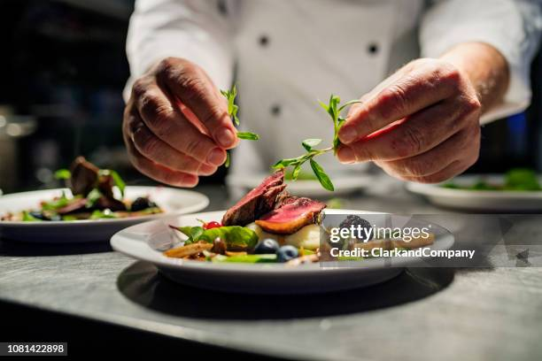
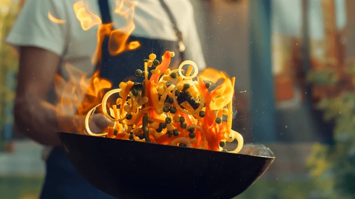

Sobre mÍ
Hola, soy un/a amante de la gastronomÍa que disfruta explorar nuevas recetas y sabores. Aquà comparto mis creaciones culinarias y consejos para que cocines como un/a chef.
Recetas destacadas
Desde platos tradicionales hasta innovaciones creativas, aquà encontrarás recetas fáciles y deliciosas para sorprender a todos.
 Ver recetasContacto
¿Quieres compartir tu receta favorita o pedirme una recomendación? EscrÍbeme o sÍgueme en redes sociales.
 InstagramDescarga nuestros trÍpticos en PDF
Haz clic en los botones para descargar los materiales informativos:
📄 Descargar Publicidad 📄 Descargar Post 📄 Descargar InfografÍa